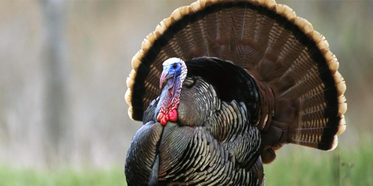

Domesticated Turkey
AKA: Male: Tom, Stag. Female: Hen Chicks: Poults or Turkeylings. Scientific Name: Meleagris gallopavo Family: Meleagridinae Species: M. gallopavo Speed: 10 km/h Length: Male: 100 – 120 cm Female: 76 – 95 cm Mass: Male: 5 – 11 kg Female: 2.5 – 5.4 kg Wing Span: 150 – 180 cm Life Span: 1 – 10 years Location: North America Diet: Seeds, nuts, berries, fruits, and insects.
Appearance:
The male has long tail feathers and a red throat. It is most commonly white but available in different colors.
Facts:
- It is a social bird and become very distressed when isolated.
- Because of its lower fat content, its white meat is generally considered healthier than dark meat.
- It is farmed in large numbers across the western world because of its most popular meat to eat on celebrations.